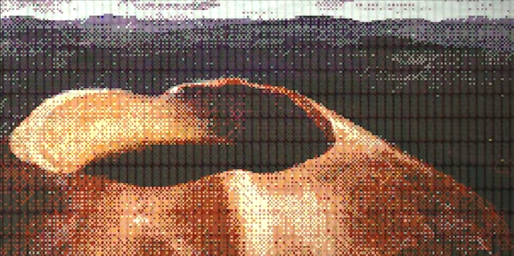
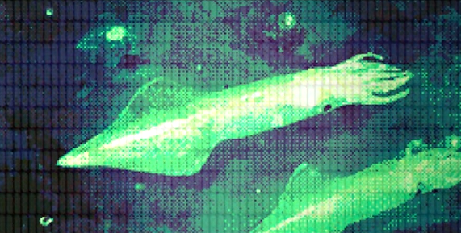

Con el avance de la tecnología a ritmo exponencial, aumentó enormemente la prosperidad… pero también los conflictos se extendieron por todo el mundo en poco tiempo. Como consecuencia, casi todas las formas de vida fueron desapareciendo. Mientras los humanos guerreaban, se sucedieron diversas catástrofes naturales, entre las que se cuentan erupciones volcánicas que elevaron el nivel del mar, dando lugar a una extinción masiva. La superficie del planeta quedó pronto convertida en un lugar inhóspito, donde ninguna forma de vida podía sobrevivir.
¡Bueno, no del todo! En contra de todo pronóstico y estadística, sí hubo un minúsculo número de humanos que logró sobrevivir. Estos supervivientes lograron hallar refugio en una gigantesca caverna que las erupciones volcánicas habían formado.
Los grandes volúmenes de agua marina que se habían acumulado en el interior de la caverna constituían un medio para la vida. Y así, mientras la humanidad se encontraba diezmada, los calamares, pulpos, medusas y otros seres acuáticos prosperaron enormemente, extendiéndose por el entorno subacuático. Para los humanos que habían logrado pervivir, estos se convirtieron en una fuente primordial de alimento.
